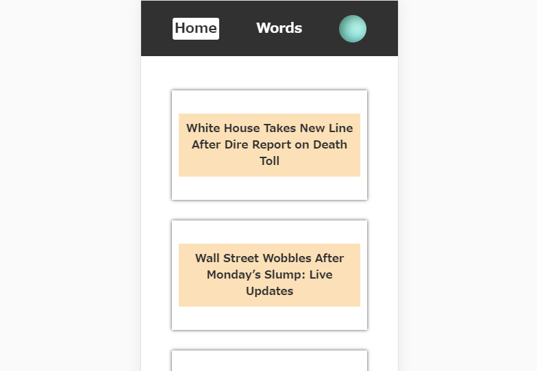

NewYork Timesのトップニュースを表示します。
Googleアカウントでログイン後、英単語と記事内で実際に使用された英文を登録し、保存しておくことができます。
なぜ作ったのか
実際に私がこのニュース記事を読み、その中で遭遇した単語や表現を紙に書いて覚えるという勉強法をとっていたので自分が実際に使用し、改善をしていくことがプログラミング初心者の私にとって比較的簡単だと思ったため。
英単語とそれを用いた例文をただ覚えるという作業になりがちな従来の英単語ではなく、ニュース記事のコンテクストの中で「実際にどのように単語が使用されるか」を意識して理解できるため。
使用した言語等
HTML/CSS
Vue.js
firebase
今後追加していく機能
ソート機能
ページネーション
実際に使う
Github